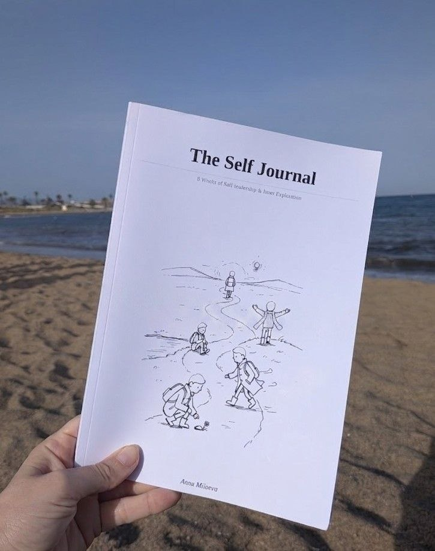

The real work is on the inside. Everything else follows.
I work with professionals, leaders, and people in transition using Internal Family Systems (IFS) coaching. Online, in English and Spanish.
Who I work with
Professionals & Leaders
You're capable, driven, and good at what you do. And something still feels off. Maybe you're burning out, repeating patterns, or leading in ways that don't feel like you. You want to understand what's happening inside, not just manage it.
People in Transition
A role, a relationship, an identity is shifting. Career changes, divorce, relocation, starting over. The external change is already happening. This work helps you navigate it without losing yourself.
People Going Deeper
You've done the retreats, the therapy, the personal work. Something shifted. Now you want that to actually show up in your daily life, your relationships, your work.
What we explore
1:1 IFS Coaching
We go inside. Together we explore the parts of you that are protecting, pushing, shutting down, or driving too hard. The inner critic, the perfectionist, the one who is always exhausted. You learn to work with them instead of against them. Change becomes possible in a different way.
AI Integration
AI is powerful and also overwhelming. I help professionals cut through the noise, set up simple tools that actually work, and understand the inner resistance that gets in the way. Practical, grounded, and faster than you'd think.
Sacred Circles
Small groups of people doing deep work together over 8 weeks. There is something that happens when you witness others going through what you thought was only yours. Intimate, structured, and something that working alone simply cannot give you.
Couples Coaching
Two people, two sets of parts, one relationship. I help you understand what shows up in conflict and find your way back to each other.
Organizational Programs
Through FINO, I bring Self-leadership into teams and organizations. A shared language that spreads, sticks, and changes how teams handle pressure, conflict, and each other.
I came to this work through living it.
I was born in Russia. Moved to Argentina at 13, then to the United States at 20. I put myself through college and a master's degree working two jobs. Then a decade inside startups, always in the room where things were breaking. I burned out too. Slowly, until I didn't recognize myself.
That's when I stopped trying to fix the outside. I had been doing inner work for years. Breathwork, meditation, circles in different parts of the world. When I found IFS, something clicked.
I trained through the IFS Institute, all three levels. Certified Deep Transformational Coach. Clients across more than 15 countries. Whatever brought you here, you're welcome.
Read my full storyWhat clients say
"I cannot express how grateful I am to be working with Anna. Working with her has been essential to me during a time of draining, repetitive life cycles that felt like I could no longer pull through. From our first session, she created a safe and grounding environment for healing. Her ability to listen with curiosity and without judgment makes her a great parts detector. She allows my process to unfold organically while trusting my instincts, even when I don't trust myself."
Yailen, Sr. Analytics Lead
"IFS was the final puzzle in healing my inner world. I didn't expect something so simple to have the potency to be so powerful. With Anna's guidance, I got to know my parts. My trauma lost its electricity and power over my breath and body."
S.M., Creative Entrepreneur, Croatia
"Anna combines her gifted empathy and her knowledge to guide you in your innermost darkness with grace and patience. The sense of clarity and calmness that remain after each session boosts the courage to go even deeper in this adventure of self-healing."
Mukta, Musician and Breathwork Facilitator, Belgium
"Working with Anna was an incredible experience that I know will have a lasting impact on my life. Through Anna's safe and non-judgmental guidance, I began to identify different parts of myself and to understand their unique perspectives and needs. I learned how to listen with curiosity and empathy, rather than judgment and criticism."
Shauna, Tech Recruiter, USA
"Through skillful direction and the ability to foresee the next step, Anna has guided me to a truly transformational experience that can be called life-changing. Gratitude and awe describe the feeling when I think of my work with her."
Katja, Realtor, USA

The Self-Journal is now on Amazon.
A companion for the inner work. Eight weeks. Eight qualities of Self-leadership from IFS. Space to write by hand, draw your parts in the margins, make it yours.
I'm writing a book.
Three years of writing on Substack. Readers and clients kept asking the same thing: is there a place where all of this lives together? So I'm writing it. It's about the parts of us that drive, protect, shut down, and show up in our work, our relationships, and our leadership. I'll be sharing the process as I write it. First readers get early access.
Follow along on SubstackNew pieces every week or two.
Ready to start?
Let's talk about where you are and whether this is the right fit.
Book a Free Intro Call